Harry Potter

A saga de filmes "Harry Potter" é baseada nos livros da autora J.K. Rowling e segue as aventuras de um jovem bruxo chamado Harry Potter. A série é composta por oito filmes que acompanham Harry desde seu primeiro ano na Escola de Magia e Bruxaria de Hogwarts até a batalha final contra o temido bruxo das trevas, Lord Voldemort. A história começa quando Harry descobre que é um bruxo e que tem uma missão especial para derrotar Voldemort, que matou seus pais. Ao longo dos anos em Hogwarts, Harry faz amigos leais, como Ron Weasley e Hermione Granger, enfrenta diversos desafios e aprende mais sobre sua própria história e seu destino. A série explora temas como amizade, coragem e o confronto entre o bem e o mal, criando um mundo mágico rico e detalhado que conquistou fãs em todo o mundo.
Onde Assistir
Ozark
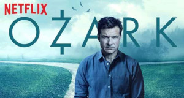Ozark é uma série dramática americana criada por Bill Dubuque e Mark Williams. A trama gira em torno de Marty Byrde, um consultor financeiro que se muda com sua família para a região dos Ozarks, no Missouri, após um esquema de lavagem de dinheiro dar errado. Marty se vê forçado a lidar com o cartel de drogas mexicano e outros perigos locais enquanto tenta estabelecer um novo esquema para lavar uma grande quantidade de dinheiro e salvar sua família.A série é conhecida por seu tom sombrio, enredos complexos e personagens multifacetados. Com destaque para a atuação de Jason Bateman como Marty Byrde e Laura Linney como sua esposa, Wendy, "Ozark" explora temas como moralidade, sobrevivência e o impacto do crime na vida familiar. A série recebeu elogios da crítica por sua narrativa envolvente e performances intensas, e se tornou um sucesso popular durante suas quatro temporadas.
Onde AssistirRocky
A saga de filmes "Rocky" segue a trajetória de Rocky Balboa, um boxeador de origem humilde que se torna um ícone do esporte. A série começa com o primeiro filme, "Rocky" (1976), onde Rocky, interpretado por Sylvester Stallone, recebe uma chance inesperada para lutar pelo título de campeão mundial dos pesos pesados. Apesar das dificuldades e da falta de recursos, ele se destaca pela determinação e coragem. A franquia inclui vários filmes que exploram a evolução de Rocky tanto dentro quanto fora do ringue, seus desafios pessoais e suas batalhas contra diversos adversários, incluindo campeões de boxe e questões da vida pessoal. A saga é conhecida por seu espírito inspirador, suas cenas emocionantes e a icônica música tema, "Gonna Fly Now". Em adições posteriores, como "Creed" (2015), a história continua com foco na nova geração, com Rocky passando o bastão para um jovem boxeador, Adonis Creed, filho de seu antigo rival e amigo, Apollo Creed.
Onde Assistir
O Senhor dos Anéis
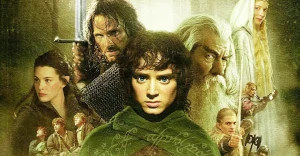
A saga de filmes "O Senhor dos Anéis", baseada nos livros de J.R.R. Tolkien, é uma épica jornada de fantasia que segue a missão de um grupo de heróis para destruir um poderoso anel que ameaça dominar o mundo. A trilogia começa com "O Senhor dos Anéis: A Sociedade do Anel" (2001), onde o jovem hobbit Frodo Bolseiro, interpretado por Elijah Wood, é encarregado de levar o Anel Único até o vulcão da Montanha da Perdição para destruí-lo e evitar que caia nas mãos do maligno Senhor das Trevas, Sauron. A saga se desenvolve com Frodo e seus companheiros — Aragorn, Legolas, Gimli, e o mago Gandalf, entre outros — enfrentando batalhas épicas, desafios e traições enquanto tentam cumprir sua missão. "O Senhor dos Anéis: As Duas Torres" (2002) e "O Senhor dos Anéis: O Retorno do Rei" (2003) continuam a história, culminando em uma grandiosa batalha final pela liberdade da Terra-média. A trilogia é aclamada por sua rica narrativa, desenvolvimento de personagens e efeitos visuais impressionantes, tornando-se um marco no gênero de fantasia cinematográfica.
Onde Assistir
Big Bang a Teoria
"
A série "The Big Bang Theory" é uma comédia americana que segue a vida de um grupo de amigos nerds e suas interações sociais. A trama se concentra principalmente em Leonard Hofstadter e Sheldon Cooper, dois físicos teóricos que trabalham em Caltech e compartilham um apartamento. Eles são acompanhados por seus amigos, Rajesh Koothrappali e Howard Wolowitz, e por suas vidas pessoais e profissionais. A série é conhecida por seu humor baseado em ciência, cultura pop e as peculiaridades dos personagens, especialmente a mente brilhante mas socialmente desajeitada de Sheldon. Ao longo das temporadas, o grupo lida com relacionamentos, trabalho e questões cotidianas, enquanto a dinâmica do grupo se expande com a chegada de personagens como Penny, uma aspirante a atriz que se torna a vizinha e interesse romântico de Leonard, e Amy Farrah Fowler e Bernadette Rostenkowski, que se tornam importantes para Sheldon e Howard, respectivamente. A série combina comédia inteligente com situações do cotidiano, resultando em um sucesso duradouro e popular.
Onde Assistir
O11ZE
A telenovela "O11ze" é uma produção argentina que gira em torno de um grupo de adolescentes com diferentes histórias e desafios pessoais. Gabo, um dos personagens principais, é um jovem talentoso no futebol, mas que enfrenta várias dificuldades tanto na vida pessoal quanto em sua carreira esportiva. A trama se desenrola mostrando a jornada de Gabo e seus amigos, suas conquistas e derrotas, e como eles lidam com as complexidades da adolescência enquanto perseguem seus sonhos e lidam com problemas familiares e sociais. A série é conhecida por seu enredo envolvente, personagens cativantes e temas atuais relacionados à juventude e ao esporte.
Onde Assistir
The Office
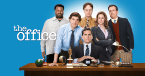"The Office" é uma série de comédia que retrata o dia a dia dos funcionários de uma empresa de papel chamada Dunder Mifflin, localizada na cidade fictícia de Scranton, Pensilvânia. A série é apresentada no formato de um documentário, com os personagens frequentemente falando diretamente para a câmera. O enredo segue a vida dos funcionários, destacando os eventos cotidianos e as dinâmicas de trabalho, especialmente sob a liderança do excêntrico e muitas vezes ineficaz gerente regional Michael Scott. A série é conhecida por seu humor seco, personagens memoráveis e situações engraçadas e embaraçosas. "The Office" tem duas versões notáveis: a original britânica, criada por Ricky Gervais e Stephen Merchant, e a versão americana, que se tornou um grande sucesso e ganhou uma base de fãs global.
Onde Assistir
Breaking Bad
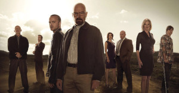
Breaking Bad é uma série de drama criada por Vince Gilligan, que segue a trajetória de Walter White, um professor de química do ensino médio diagnosticado com câncer terminal. Para garantir o futuro financeiro de sua família, Walter decide fabricar e vender metanfetamina com a ajuda de seu ex-aluno Jesse Pinkman. À medida que se aprofunda no mundo do crime, Walter se transforma de um homem comum em um perigoso e implacável chefão do tráfico de drogas, adotando o alter ego "Heisenberg". A série explora temas de moralidade, consequências e como o poder e a ambição podem corromper.
Onde Assistir
The Walking Dead
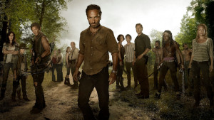
The Walking Dead é uma série de terror e drama pós-apocalíptico baseada nos quadrinhos de mesmo nome. A trama segue um grupo de sobreviventes em um mundo devastado por um apocalipse zumbi. O protagonista é Rick Grimes, um ex-policial que, após acordar de um coma, descobre que o mundo foi tomado por mortos-vivos. Ele lidera um grupo de pessoas enquanto eles lutam para sobreviver, enfrentando não apenas os zumbis, mas também outros humanos, muitas vezes mais perigosos. A série explora temas como sobrevivência, perda, moralidade e o colapso da civilização.
Onde Assistir
Sex Education
Sex Education é uma série de comédia dramática britânica que acompanha a vida de Otis Milburn, um adolescente inseguro que, apesar de ser virgem, tem um vasto conhecimento sobre sexo devido à sua mãe, Jean, uma terapeuta sexual. Junto com sua amiga Maeve, Otis começa a oferecer conselhos sobre questões sexuais e de relacionamento para seus colegas de escola, criando uma "clínica de terapia sexual" informal. Ao longo da série, os personagens exploram temas de identidade, sexualidade, amizade e autodescoberta, enquanto lidam com os desafios típicos da adolescência.
Onde Assistir
Mr. Robot
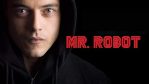Mr. Robot é uma série de drama psicológico que segue Elliot Alderson, um jovem programador de segurança cibernética com transtorno dissociativo de identidade e depressão. Elliot trabalha durante o dia como engenheiro de segurança e à noite atua como um hacker ativista conhecido como "fsociety". Ele se junta a um grupo de hackers liderado pelo enigmático Mr. Robot com o objetivo de derrubar a poderosa corporação E Corp, que Elliot vê como corrupta e opressiva. A série explora temas de identidade, paranoia, e os efeitos da tecnologia na sociedade, enquanto revela uma trama complexa e cheia de reviravoltas.
Onde Assistir
The Witcher
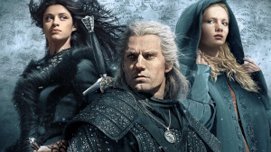The Witcher é uma série de fantasia criada por Lauren Schmidt Hissrich e baseada na série de livros do autor polonês Andrzej Sapkowski. A trama segue Geralt de Rivia, um caçador de monstros conhecido como "Witcher", que possui habilidades sobrenaturais e enfrenta criaturas e perigos em um mundo medieval repleto de magia e intriga. A série explora a vida de Geralt, suas batalhas contra monstros, e seu envolvimento com personagens complexos como a princesa Ciri, cuja história está entrelaçada com a dele, e Yennefer de Vengerberg, uma poderosa feiticeira com seu próprio caminho e conflitos. "The Witcher" é conhecida por sua narrativa não linear, rica construção de mundo e personagens profundos. A série combina elementos de ação, magia e drama, e é elogiada por suas cenas de batalha e a interpretação de Henry Cavill no papel de Geralt.
Onde AssistirO Menino do Pijama Listrado
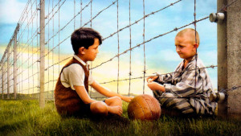O Menino do Pijama Listrado é um filme de 2008 dirigido por Mark Herman, baseado no livro de John Boyne. A história se passa durante a Segunda Guerra Mundial e segue Bruno, um menino de 8 anos cujo pai é um oficial nazista de alto escalão. Quando a família de Bruno se muda para uma casa próxima a um campo de concentração, Bruno faz amizade com um garoto chamado Shmuel, que está preso no campo e usa um pijama listrado. A amizade entre Bruno e Shmuel, apesar das barreiras físicas e ideológicas, revela a inocência e a crueldade da guerra. O filme aborda temas de preconceito, amizade e a brutalidade do regime nazista, culminando em um final emocionalmente impactante que ilustra a tragédia e o custo humano do conflito.
Onde AssistirGame of Thrones
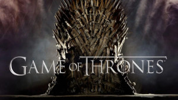Game of Thrones é uma série de fantasia épica baseada nos livros de George R.R. Martin. A trama se passa nos continentes fictícios de Westeros e Essos, onde várias famílias nobres competem pelo Trono de Ferro e pelo controle dos Sete Reinos. A série é conhecida por suas intrigas políticas, batalhas épicas e complexos jogos de poder entre os personagens. Enquanto isso, uma ameaça sobrenatural cresce no norte, com criaturas chamadas "White Walkers" ameaçando a existência de todos. A narrativa é marcada por reviravoltas dramáticas, alianças traiçoeiras e uma constante luta pelo poder e sobrevivência.
Onde Assistir
Lá Casa de Papel
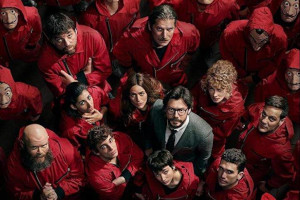
La Casa de Papel é uma série espanhola que segue um grupo de criminosos que, sob a liderança do misterioso "Professor", planejam e executam o maior assalto da história à Real Casa da Moeda da Espanha. A trama se concentra em como eles tentam imprimir bilhões de euros enquanto lidam com os desafios de manter os reféns sob controle e enfrentar a pressão das forças policiais. À medida que o plano avança, surgem conflitos internos e romances entre os membros do grupo, complicando ainda mais a situação. A série é conhecida por suas reviravoltas emocionantes, personagens carismáticos e exploração de temas como resistência, lealdade e justiça.
Onde Assistir
Peaky Blinders
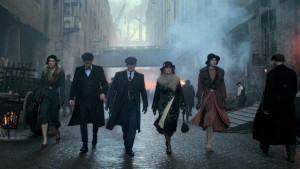
Peaky Blinders é uma série de drama histórico que segue a família Shelby, liderada pelo ambicioso Thomas Shelby, um veterano da Primeira Guerra Mundial. Ambientada em Birmingham, Inglaterra, na década de 1920, a série retrata o crescimento e a ascensão da gangue "Peaky Blinders", conhecida por suas atividades criminosas e suas boinas com lâminas ocultas. Thomas Shelby usa sua astúcia e estratégia para expandir seus negócios e lidar com rivais, policiais e a política local. A série é conhecida por sua atmosfera sombria, personagens complexos e uma trilha sonora contemporânea que contrasta com o cenário histórico.
Onde Assistir
Prison Break
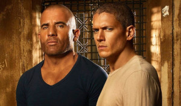Prison Break é uma série de suspense e drama que segue Michael Scofield, um engenheiro estrutural que se infiltra na prisão para ajudar seu irmão, Lincoln Burrows, a escapar do corredor da morte. Lincoln foi condenado injustamente por um crime que não cometeu, e Michael, determinado a salvá-lo, planeja um elaborado esquema de fuga. Com a ajuda de uma série de aliados dentro e fora da prisão, Michael enfrenta desafios e perigos, enquanto revela uma complexa trama de corrupção e conspiração que vai além dos muros da prisão. A série é marcada por tensão constante, reviravoltas e uma intrincada narrativa de fuga e redenção.
Onde Assistir
Vingadores
Vingadores: Guerra Infinita é um filme de super-heróis do Universo Marvel que reúne diversos personagens dos filmes anteriores da franquia. A trama segue a tentativa de Thanos, um poderoso titã, de coletar todas as seis Joias do Infinito, que lhe concederão o poder de dizimar metade da vida no universo com um estalar de dedos. Os Vingadores, juntamente com os Guardiões da Galáxia e outros heróis, se unem para impedir Thanos e proteger as Joias. O filme é conhecido por suas intensas batalhas, drama e um final impactante que deixa as consequências da luta em aberto para a continuação.
Onde Assistir
Vingadores: Ultimato é o épico desfecho da saga do Infinity no Universo Marvel. Após os eventos de Vingadores: Guerra Infinita, onde Thanos dizimou metade da vida no universo, os Vingadores restantes se reúnem para corrigir a devastação e restaurar a ordem. Utilizando a viagem no tempo para coletar as Joias do Infinito de diferentes períodos, eles planejam desfazer o estrago causado por Thanos. A batalha culmina em uma épica luta contra Thanos, resultando em momentos de sacrifício e redenção para os heróis. O filme oferece uma conclusão emocional e grandiosa para a saga que começou com Homem de Ferro em 2008.
Onde Assistir
Até o Último Homem
Até o Último Homem (Hacksaw Ridge) é um filme baseado em fatos reais que conta a história de Desmond Doss, um soldado dos EUA durante a Segunda Guerra Mundial que se alistou como médico de combate sem armas devido à sua fé e crenças pessoais. Doss enfrenta resistência e dificuldades no treinamento militar, mas, durante a Batalha de Okinawa, ele demonstra coragem e determinação ao salvar dezenas de soldados feridos sob intenso fogo inimigo, sem disparar um único tiro. O filme destaca temas de bravura, fé e perseverança.
Onde Assistir
As Aventuras de Pi
As Aventuras de Pi (Life of Pi) é um filme baseado no romance de Yann Martel. A história segue Pi Patel, um jovem indiano que sobrevive a um naufrágio em um bote salva-vidas no Oceano Pacífico. A bordo, ele compartilha a embarcação com um tigre de bengala chamado Richard Parker. Ao longo da jornada, Pi enfrenta desafios extremos e desenvolve uma relação inesperada com o tigre, enquanto explora temas de fé, sobrevivência e a força do espírito humano. O filme é conhecido por sua narrativa visualmente deslumbrante e reflexiva.
Onde Assistir
Batman: O Cavaleiro das Trevas
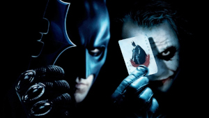
Batman: O Cavaleiro das Trevas (The Dark Knight) é um filme de super-heróis dirigido por Christopher Nolan e é o segundo da trilogia do Batman. A trama segue Bruce Wayne, que, como Batman, enfrenta uma nova ameaça em Gotham City: o Coringa, um criminoso psicopata que busca mergulhar a cidade no caos. O Coringa desafia Batman e suas convicções, colocando-o contra seus próprios princípios e testando suas alianças, especialmente com o promotor Harvey Dent e a comissária de polícia James Gordon. O filme é conhecido por sua complexa narrativa, personagens profundos e a atuação icônica de Heath Ledger como o Coringa.
Onde Assistir